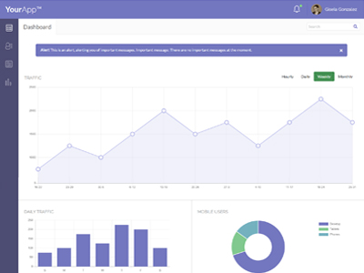

Portfolio



Though having a strong background in art and design, I earned a bachelors degree in mathematics, inspired to help others through the complexities of the subject. I was determined to prove to young and old that math is fun.
After teaching high school math for 14 years, I learned that teens have excellent selective hearing abilities. I also acquired a unique perspective, as well as gained organizational, teambuilding, and presentational skills.
As a teacher, I value and advocate for continued education. The world of technology is continuously changing and evolving. If we are to keep up, then we too much change and evolve, and embrace life-long learning.
HTML5
CSS90%
Sass90%
JavaScript80%
JQuery50%
Bootstrap90%
PHP40%
Photoshop90%
AdobeXD60%